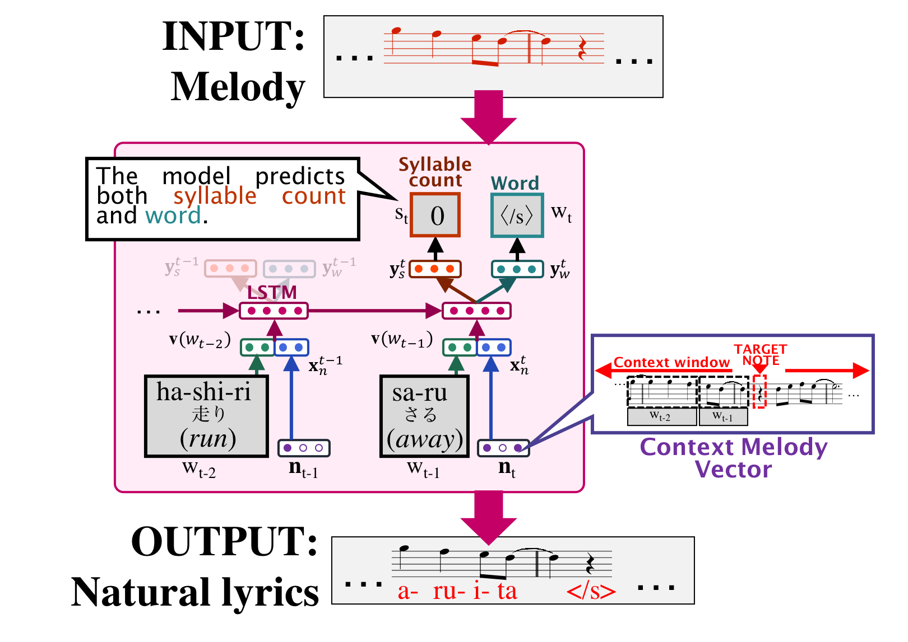
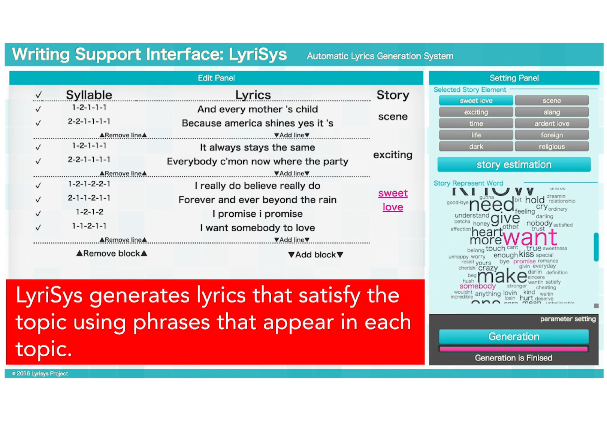
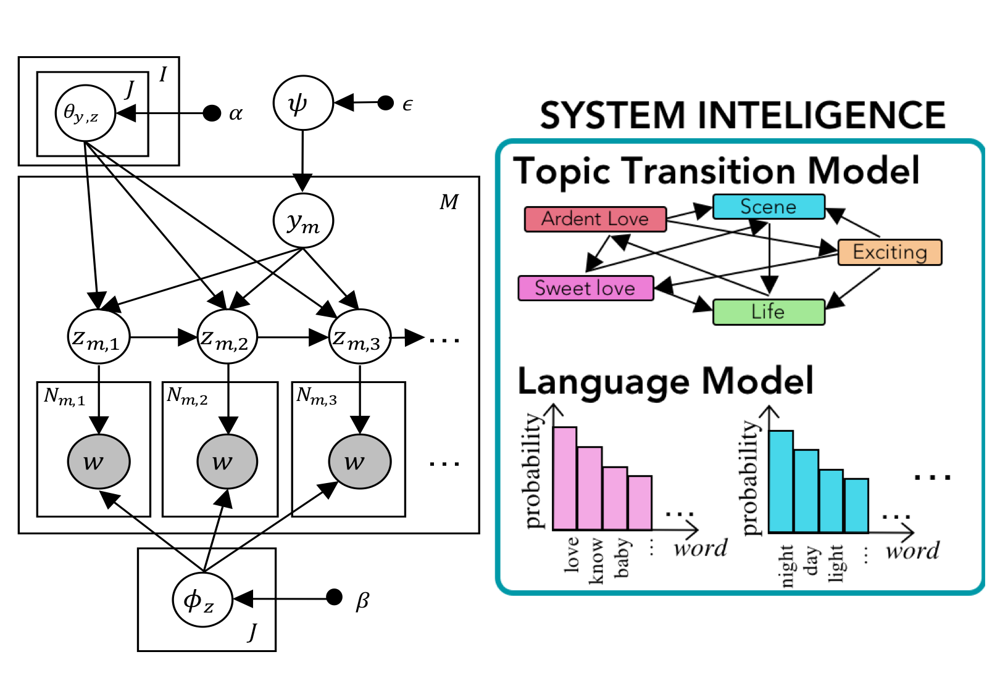
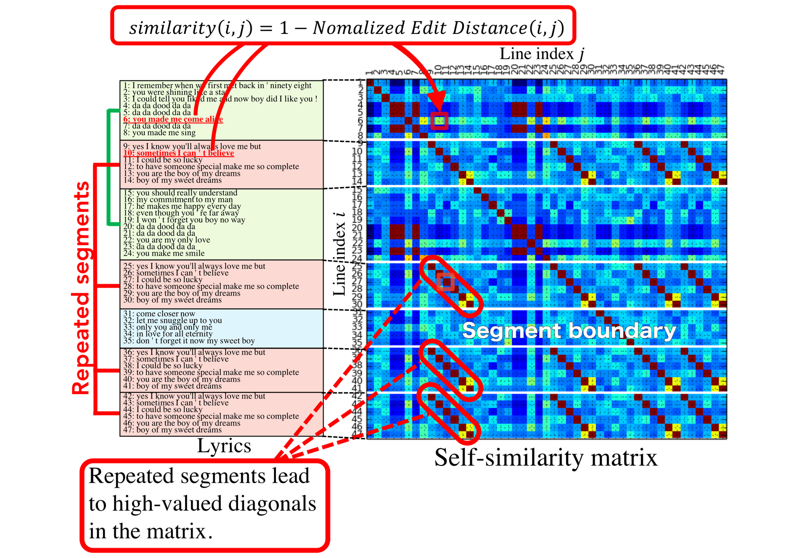
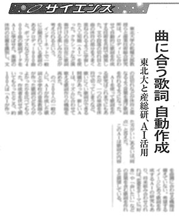
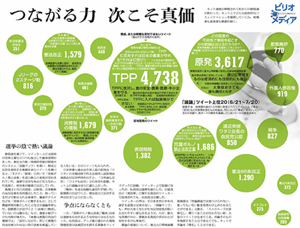

Kento WATANABE 渡邉 研斗
Researcher
email: kento.watanabe [at] aist.go.jp
Research area
I am interested in Natural Language Processing (NLP), especially my research focus is lyrics processing.
This is a new research area in which natural language processing, music information processing and intelligent interface are fused.
Once a reasonably sophisticated computational model of lyrics is obtained, the model will provide us a better understanding of the nature and structure of lyrics, which will then allow us to consider building computer systems which can enhance the creativity of human lyrics writers.
My technical background are language model, discourse structure analysis, text generation, bayesian mode, support interface, SNS analysis and sentiment analysis.
Biography
Academic activities

Abstract:
This paper presents a novel, data-driven language model that produces entire lyrics for a given input melody.
(1) We create a collection of 1,000 lyrics-melody pairs augmented with precise syllable-note alignments and word/sentence/paragraph boundaries.
(2) We provide a quantitative analysis of the correlation between word/sentence/paragraph boundaries in lyrics and melodies.
(3) We propose an RNN-based lyrics language model conditioned on a featurized melody.
Info:
Kento Watanabe, Yuichiroh Matsubayashi, Satoru Fukayama, Masataka Goto, Kentaro Inui and Tomoyasu Nakano.
NAACL-HLT 2018

Abstract:
This paper presents LyriSys, a novel lyric-writing support system.
LyriSys allows users to create and revise their work incrementally in a trial-and-error manner.
Through fine-grained interactions with the system, the user can create the specifications of the musical structure and the story of the lyrics in terms of the verse-bridge-chorus structure, the number of lines, words and syllables, and most importantly, the transition over semantic topics such as "scene", "dark" and "sweet love".
Info:
Kento Watanabe, Yuichiroh Matsubayashi, Kentaro Inui, Tomoyasu Nakano, Satoru Fukayama and Masataka Goto.
ACM IUI 2017

Abstract:
This paper addresses the issue of modeling the discourse nature of lyrics and presented the first study aiming at capturing the two common discourse-related notions: storylines and themes.
We assume that a storyline is a chain of transitions over topics of segments and a song has at least one entire theme.
We then hypothesize that transitions over topics of lyric segments can be captured by a probabilistic topic model which incorporates a distribution over transitions of latent topics and that such a distribution of topic transitions is affected by the theme of lyrics.
Info:
Kento Watanabe, Yuichiroh Matsubayashi, Kentaro Inui, Satoru Fukayama, Tomoyasu Nakano, and Masataka Goto.
IEICE Transactions on Information and Systems

Abstract:
This study proposes a computational model of the discourse segments in lyrics to understand and to model the structure of lyrics.
To test our hypothesis that discourse segmentations in lyrics strongly correlate with repeated patterns, we conduct the first large-scale corpus study on discourse segments in lyrics.
Next, we propose the task to automatically identify segment boundaries in lyrics and train a logistic regression model for the task with the repeated pattern and textual features.
Info:
Kento Watanabe, Yuichiroh Matsubayashi, Naho Orita, Naoaki Okazaki, Kentaro Inui, Satoru Fukayama, Tomoyasu Nakano, Jordan B. L. Smith and Masataka Goto.
COLING 2016
Awards
- Tohoku University Student Incentive Award (2018)
- The 231th IPSJ SIG (Special Interest Groups) on Natural Language Processing Student Incentive Award (2017)
- The Association for Natural Language Processing Best Paper Award (2013)
- The 75th Annual Meeting of the IPSJ Conference Student Incentive Award (2013)
Publications
Journal papers
-
Kento Watanabe, Yuichiroh Matsubayashi, Kentaro Inui, Satoru Fukayama, Tomoyasu Nakano, and Masataka Goto.
"Modeling Storylines in Lyrics".
IEICE Transactions on Information and Systems, Vol.E101.D, No.4, pp1167–1179, April 2018.
paper
-
Keita Nabeshima, Kento Watanabe, Junta Mizuno, Naoaki Okazaki, and Kentaro Inui.
"Extracting False Information on Twitter and Analyzing its Diffusion Processes by using Linguistic Patterns for Correction (in Japanese)".
Journal of Natural Language Processing, Vol.13, No.2, pp.461–484, June 2013.
International Conference, Workshop, Symposium
-
Reina Akama, Kento Watanabe, Sho Yokoi, Sosuke Kobayashi, Kentaro Inui.
"Unsupervised Learning of Style-sensitive Word Vectors".
In Proceedings of the 56th Annual Meeting of the Association for Computational Linguistics (ACL 2018), Melbourne, July 2018.
paper
-
Kento Watanabe, Yuichiroh Matsubayashi, Satoru Fukayama, Masataka Goto, Kentaro Inui and Tomoyasu Nakano.
"A Melody-conditioned Lyrics Language Model".
In Proceedings of the 16th Annual Conference of the North American Chapter of the Association for Computational Linguistics: Human Language Technologies (NAACL-HLT 2018), pp.163–172, June 2018.
paper
-
Kento Watanabe, Yuichiroh Matsubayashi, Kentaro Inui, Tomoyasu Nakano, Satoru Fukayama and Masataka Goto.
"LyriSys: An Interactive Support System for Writing Lyrics Based on Topic Transition".
In Proceedings of the 22nd Annual Meeting of the Intelligent User Interfaces Community (ACM IUI 2017), pp.559—563, March 2017.
paper,
slide
-
Kento Watanabe, Yuichiroh Matsubayashi, Naho Orita, Naoaki Okazaki, Kentaro Inui, Satoru Fukayama, Tomoyasu Nakano, Jordan B. L. Smith and Masataka Goto.
"Modeling Discourse Segments in Lyrics Using Repeated Patterns".
In Proceedings of the 26th International Conference on Computational Linguistics (COLING 2016), PP.1959—1969, December 2016.
paper
- Kento Watanabe, Yuichiroh Matsubayashi, Kentaro Inui and Masataka Goto.
"Modeling Structural Topic Transitions for Automatic Lyrics Generation".
In Proceedings of the 28th Pacific Asia Conference on Language,Information and Computing (PACLIC 2014),pp.422—431,December 2014.
paper
- Naoaki Okazaki, Keita Nabeshima, Kento Watanabe, Junta Mizuno and Kentaro Inui.
"Extracting and Aggregating False Information from Microblogs".
In Proceedings of the Workshop on Language Processing and Crisis Information 2013 (LPCI 2013), pp.36–43, October 2013.
paper
Domestic Conference, Workshop, Symposium (in Japanese)
-
Kento Watanabe, Yuichiroh Matsubayashi, Satoru Fukayama, Masataka Goto, Kentaro Inui and Tomoyasu Nakano.
"A lyrics language model based on melody segments (in Japanese)".
In Proceedings of the 24th Annual Meeting of the Association for Natural Language Processing, pp.1296–1299, March 2018.
paper,
-
Kento Watanabe, Reina Akama, Sho Yokoi, Ran Tian and Kentaro Inui.
"A topic model considering the difference between topic and style (in Japanese)".
In Proceedings of the 24th Annual Meeting of the Association for Natural Language Processing, pp.643–646, March 2018.
paper,
-
Ran Tian, Kento Watanabe and Kentaro Inui.
"Transfer learning of multiple field emotional polarities using multi-factor word embedding (in Japanese)".
In Proceedings of the 24th Annual Meeting of the Association for Natural Language Processing, pp.444–447, March 2018.
paper,
-
Reina Akama, Sho Yokoi, Kento Watanabe, Sosuke Kobayashi, Ran Tian and Kentaro Inui.
"Separation of semantic and style component of word vector based on sampling strategy (in Japanese)".
In Proceedings of the 24th Annual Meeting of the Association for Natural Language Processing, pp.718–721, March 2018.
paper,
-
Reina Akama, Sho Yokoi, Kento Watanabe, and Kentaro Inui.
"Semi-supervised Learning of Style Vectors (in Japanese)".
In JSAI SIG Technical Reports, Vol. SIG-SLUD-B508-27, pp.96–97, October 2017.
paper,
-
Reina Akama, Kento Watanabe, Sho Yokoi, and Kentaro Inui.
"Unsupervised Learning of Style Space and Style Controllable Dialog System (in Japanese)".
The 12th NLP Symposium for Young Researchers, September 2017.
-
Kento Watanabe, Yuichiroh Matsubayashi, Satoru Fukayama, Tomoyasu Nakano, Masataka Goto, and Kentaro Inui.
"Automatic Lyrics Generation based on Correction between Lyrics and Melodies (in Japanese)".
In IPSJ SIG Technical Re- ports, Vol. 2017-NL-231 (15), pp.1-8, May 2017.
paper,
slide
-
Shun Kiyono, Ran Tian, Kento Watanabe, Naoaki Okazaki, Kentaro Inui.
"Analysis of Tense Information for Discourse Relationship Recognition (in Japanese)".
In Proceedings of the 23rd Annual Meeting of the Association for Natural Language Processing, pp.827–830, March 2017.
paper,
-
Kento Watanabe, Yuichiroh Matsubayashi, Kentaro Inui, Satoru Fukayama, Tomoyasu Nakano, and Masataka Goto.
"Modeling Theme and Story Line for Lyrics (in Japanese)".
In Proceedings of the 30th Annual Conference of the Japanese Society for Artificial Intelligence, May 2016.
paper,
slide
-
Kento Watanabe, Yuichiroh Matsubayashi, Kentaro Inui, Tomoyasu Nakano, Satoru Fukayama, and Masataka Goto.
"LyriSys: Writing Support Interface based on the Global Structure of Lyrics (in Japanese)".
In Proceedings of the 23rd Workshop on Interactive Systems and Software (WISS 2015), December 2015.
paper
-
Kento Watanabe, Yuichiroh Matsubayashi, Kentaro Inui, Tomoyasu Nakano, Satoru Fukayama, and Masataka Goto.
"Automatic Lyrics Generation System Considering Storylines (in Japanese)".
The 10th NLP Symposium for Young Researchers, September 2015.
-
Shun Kiyono, Kento Watanabe, Naoaki Okazaki, Kentaro, Inui.
"AutomaticJapanese Palindrome Generation Based on Phrase Bi-grams and Transformation Rules (in Japanese)".
In Proceedings of the 29th Annual Conference of the Japanese Society for Artificial Intelligence, June 2015.
paper
-
Kento Watanabe, Yuichiroh Matsubayashi, Kentaro Inui, and Masataka Goto.
"Modeling Latent Topic Transitions from Large Scale Lyrics Data (in Japanese)".
In Proceedings of the 77th Annual Meeting of the Information Processing Society of Japan, Vol.2, pp.371–372, March 2015.
paper
-
Kento Watanabe, Yuichiroh Matsubayashi, Kentaro Inui, and Masataka Goto.
"Towards Practical Automatic Lyrics Generation (in Japanese)".
The 9th NLP Symposium for Young Researchers, September 2014.
-
Kento Watanabe, Yuichiroh Matsubayashi, Kentaro Inui, and Masataka Goto.
"Automatic Lyrics Generation System Considering Global Structure (in Japanese)".
In Proceedings of the 20th Annual Meeting of the Association for Natural Language Processing, pp.694–697, March 2014.
paper
-
Kento Watanabe, Naoaki Okazaki, and Kentaro Inui.
"Exploring Social Problems from Twitter (in Japanese)".
The 8th NLP Symposium for Young Researchers, September 2013.
-
Kento Watanabe, Keita Nabeshima, Junta Mizuno, and Kentaro Inui.
"Automatic Classification of False and Correction Information on Twitter (in Japanese)".
In Proceedings of the 19th Annual Meeting of the Association for Natural Lan- guage Processing, pp.178–181, March 2013.
paper
Kento Watanabe, Keita Nabeshima, Junta Mizuno, Naoaki Okazaki, and Kentaro Inui.
"Visualization of Diffusion and Convergence Process of False Information on Twitter (in Japanese)".
In Proceedings of the 75th Annual Meeting of the Information Processing Society of Japan, Vol.1, pp.657–658, March 2013.
paper
Thesis
-
Doctor thesis: "Modeling Discourse Structure of Lyrics"
thesis
- Master thesis: "Study on automatic lyrics generation considering lyric structure and phonology (in Japanese)"
- Bachelor thesis: "Analysis of diffusion convergence process of misinformation by automatic classification of tweets (in Japanese)"
Media
- 29/4/2018: "曲に合う歌詞 自動生成 (in Japanese)". Nihon Keizai Shimbun (Japanese newspaper).
URL

- 26/7/2013: "つながる力 次こそ真価 (in Japanese)". Asahi Shimbun (Japanese newspaper).

Skill
Python, JavaScript, C/C++, C#, Swift, HTML, CSS, Unity, AfterEffects, PremierePro, Photoshop, Illustrator, Cubase, VOCALOID, MMD, Shade
Hobby
Future technologies/events that
Hatsune Miku opens, Programming, Video production.
Links